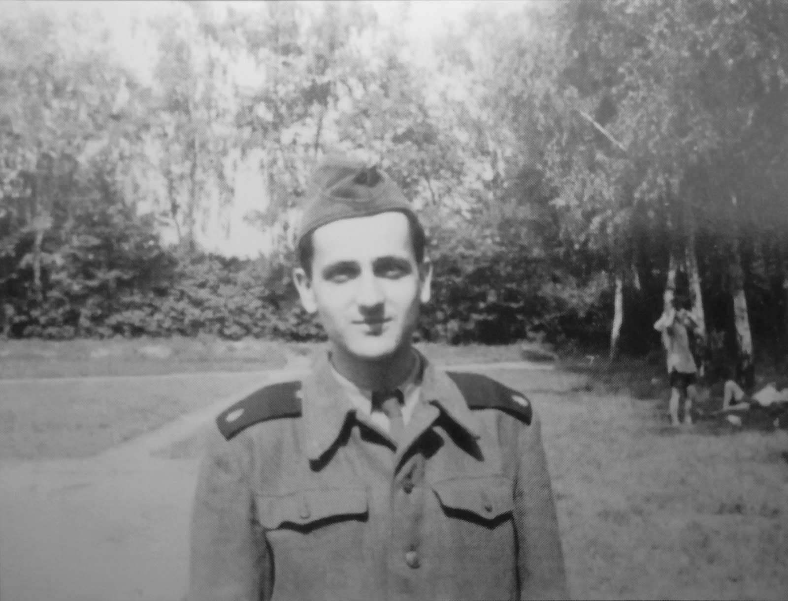
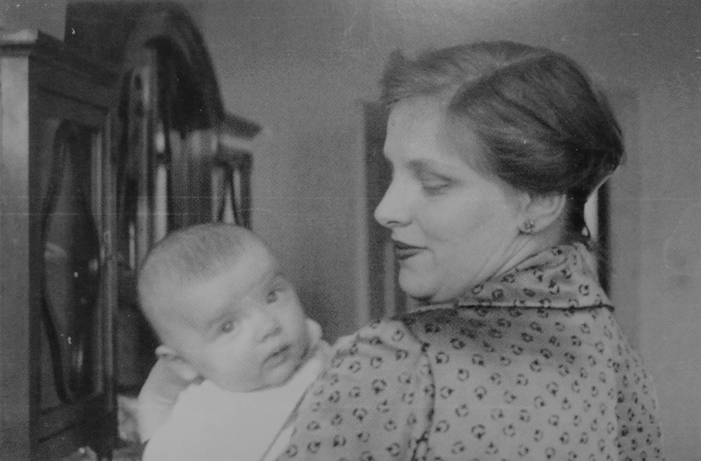
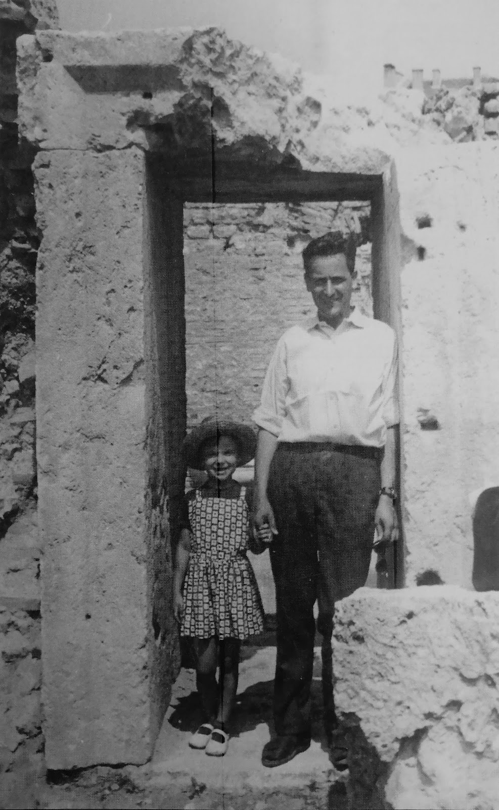

Životopis Jaroslava Mezníka
Prof. PhDr.
Jaroslav Mezník, CSc. (31. prosince 1928 Bratislava – 28. listopadu 2008 Brno) se narodil do
poměrně bohaté rodiny Marie rozené Dvořákové a Jaroslava Mezníka, moravskoslezského zemského
prezidenta, který byl zatčen a následně zastřelen v nacistickém koncentračním táboře v Brně.

Již na gymnáziu (které navštěvoval v letech 1940 a 1948) projevoval nesouhlas s režimem, který přinesl Únorový převrat; již tehdy se ve veřejných diskuzích otevřeně stavěl proti režimu. Od počátků svého politického smýšlení se Jaroslav Mezník pokládal za levicově orientovaného, komunismus však byl pro něj naprosto nepřijatelný.
Vzhledem ke svému „buržoaznímu původu” (tehdejšímu režimu se příčili bohatí lidé), své politické angažovanosti, kterou lze pokládat za režimu oponující, a skutečnost, že odmítl vstoupit do KSČ (Komunistické strany Československa) je poměrně velkým štěstím, že byl vůbec přijat na univerzitu.
Na filozofické fakultě Masarykovy univerzity vystudoval historii a archivnictví. Těmto oborům se věnoval celý život, i když mu komunistický režim často stavěl do cesty překážky. Ve svém výzkumu se soustředil převážně na středověké dějiny, téma pro režim v podstatě bezproblémové – všechny jeho politické těžkosti tak nutně vychází z jeho politické aktivity, ne odborné činnosti.
Od ledna roku 1953 pracoval prvně jako archivář ve Státním archivu v Janovicích u Rýmařova (na Krajském archivu Olomouckého kraje), v říjnu tohoto roku byl však povinen nastoupit do tzv. technických praporů na službu, která trvala dva roky – většinu své služby strávil těžkou prací v dolech v Petřvaldě.
Krátce po propuštění ze služby dostal místo jako aspirant pražského ústavu na brněnské pobočce Historického ústavu československé Akademie věd, od září 1959 se pak měl stát odborným pracovníkem. Ukázalo se však, že z nějakého důvodu v roce 1956 při nástupu do práce nebyla prověřena jeho minulost – když tomu tak bylo učiněno v roce 1959 a byly prověřeny posudky z jeho bývalých zaměstnání, vyšlo najevo, že byla organizace KSČ na fakultě dříve proti tomu, aby se stal archivářem v Olomouci. S jeho přijetím na novou pozici tedy byly problémy, nakonec ale prošel a v ústavu pracoval až do roku 1972.
15. července 1957 si Jaroslav Mezník vzal Vlastu Potměšilovou, studentku medicíny; 28. října 1960 se jim narodila dcera Dagmar. Pan prof. Mezník od roku 1960 přednášel na Filozofické fakultě na Masarykově univerzitě v Brně, dále se 24. října 1968 se na FF Univerzity Karlovy habilitoval a byl mu – poměrně překvapivě i přes jeho politickou činnost – udělen titul docenta.
V roce 1953 zemřel Josif Stalin a v roce 1956 proběhl XX. sjezd Komunistické strany Sovětského svazu, na kterém Nikita Chruščov odsoudil kult jeho osobnosti. Také se v té době měnila politika Sovětského svazu, s tím, že Chruščov – jako přední sovětský státník – navazoval kontakty se západními zeměmi. Tyto události měly za následek uvolňování režimu v šedesátých letech, které vyvrcholilo Pražským jarem v roce 1968.
V lednu 1968 se musel své funkce vzdát Antonín Novotný a na místo prvního tajemníka KSČ byl zvolen Alexander Dubček. Jaroslav Mezník popisuje, že tehdy došlo k „prolomení hrází svobodného vyjadřování.“ (str. 141) Noviny a časopisy psaly o potřebě obnovení demokracie; celkově se situace velmi výrazně uvolnila.
V reakci na změny, ke kterým docházelo, autor píše: „Nechtěl jsem být jen svědkem událostí, pokládal jsem za svou povinnost, abych se na dění nějakým způsobem podílel.“ (str. 141) Po roce 1967 tak Jaroslav Mezník vstoupil do ČSS (Československé strany socialistické). I když byla tehdy zcela pod nadvládou komunistické strany, doufal, že se z ní časem stane samostatná a skutečná strana, která by mohla napomoci k obnově demokracie. Důležité je poznamenat, že v rámci ČSS byl založen diskuzní klub, ve kterém její členové probírali své politické názory; ty se často s oficiálními stanovisky ČSS neshodovaly.
Po roce 1968, tedy v době normalizace, se ČSS začala více orientovat na kurz určený komunistickou stranou – někteří členové se začali scházet sami, jelikož usoudili, že prostřednictvím strany ničeho nedosáhnou. Tyto schůzky se většinou odehrávaly v bytech různých z nich. Program organizace, která tak vznikla, byl nazván Malý akční program Československého hnutí za demokratický socialismus. Mezi jeho hlavní body patřilo obnovení samostatnosti Československa, vytvoření nové kultury, zavedení svobody náboženského přesvědčení a celková reformulace myšlenky socialismu. Jaroslav Mezník se ůčastnil především diskuzí, některé činnosti organizace mu přišly dokonce nesmyslné.
V roce 1970 došlo k zásadním změnám téměř na všech pracovištích – docházelo k politickým prověrkám, při kterých byla zásadní část pracovníků propuštěna, či minimálně přesunuta. Velmi výrazně se tyto změny týkaly historických ústavů – právě ty byly v letech 1967-1968 samozřejmě politicky angažované.
V únoru 1970 byl Historický ústav československé Akademie věd zrušen a místo něj byl zřízen Ústav československých a světových dějin. Zřízením nového ústavu byly zrušeny všechny pracovní smlouvy, které byly uzavřeny za dobu existence ústavu starého. Následovaly prověrky všech pracovníků, a všichni byli nuceni sepsat svou politickou činnost v letech 1968-1969. Podle slov prof. Mezníka: „Bylo to ponižující. Člověk stěží mohl psát něco, čím by se ohrozil, na druhé straně se mu příčilo popírat své přesvědčení a za svou činnost se kát.“ (str. 156)
V září roku 1972 proběhlo jednání konkurzní komise, na které byla mimo jiné probírána žádost prof. Mezníka na novou smlouvu, jelikož jeho dosavadní mu zajišťovala místo jen do konce roku; konkurzní komise se rozhodla, že s ním již nová smlouva uzavřena nebude. Nastal pro něj (a velké množství jeho kolegů) tak problém s hledáním zaměstnání, které by alespoň do nějaké míry odpovídalo jeho kvalifikaci; nakonec uspěl, a podařilo se mu získat místo na Univerzitní knihovně v Brně.
Marie Mezníková a JUDr. Jaroslav Mezník, asi roku 1939.
Již na gymnáziu (které navštěvoval v letech 1940 a 1948) projevoval nesouhlas s režimem, který přinesl Únorový převrat; již tehdy se ve veřejných diskuzích otevřeně stavěl proti režimu. Od počátků svého politického smýšlení se Jaroslav Mezník pokládal za levicově orientovaného, komunismus však byl pro něj naprosto nepřijatelný.
Vzhledem ke svému „buržoaznímu původu” (tehdejšímu režimu se příčili bohatí lidé), své politické angažovanosti, kterou lze pokládat za režimu oponující, a skutečnost, že odmítl vstoupit do KSČ (Komunistické strany Československa) je poměrně velkým štěstím, že byl vůbec přijat na univerzitu.
Na filozofické fakultě Masarykovy univerzity vystudoval historii a archivnictví. Těmto oborům se věnoval celý život, i když mu komunistický režim často stavěl do cesty překážky. Ve svém výzkumu se soustředil převážně na středověké dějiny, téma pro režim v podstatě bezproblémové – všechny jeho politické těžkosti tak nutně vychází z jeho politické aktivity, ne odborné činnosti.
Od ledna roku 1953 pracoval prvně jako archivář ve Státním archivu v Janovicích u Rýmařova (na Krajském archivu Olomouckého kraje), v říjnu tohoto roku byl však povinen nastoupit do tzv. technických praporů na službu, která trvala dva roky – většinu své služby strávil těžkou prací v dolech v Petřvaldě.

Jaroslav Mezník jako voják s černými výložkami – asi 1954.
Krátce po propuštění ze služby dostal místo jako aspirant pražského ústavu na brněnské pobočce Historického ústavu československé Akademie věd, od září 1959 se pak měl stát odborným pracovníkem. Ukázalo se však, že z nějakého důvodu v roce 1956 při nástupu do práce nebyla prověřena jeho minulost – když tomu tak bylo učiněno v roce 1959 a byly prověřeny posudky z jeho bývalých zaměstnání, vyšlo najevo, že byla organizace KSČ na fakultě dříve proti tomu, aby se stal archivářem v Olomouci. S jeho přijetím na novou pozici tedy byly problémy, nakonec ale prošel a v ústavu pracoval až do roku 1972.
15. července 1957 si Jaroslav Mezník vzal Vlastu Potměšilovou, studentku medicíny; 28. října 1960 se jim narodila dcera Dagmar. Pan prof. Mezník od roku 1960 přednášel na Filozofické fakultě na Masarykově univerzitě v Brně, dále se 24. října 1968 se na FF Univerzity Karlovy habilitoval a byl mu – poměrně překvapivě i přes jeho politickou činnost – udělen titul docenta.

Vlasta Mezníková s dcerou Dagmarou, 1961.
V roce 1953 zemřel Josif Stalin a v roce 1956 proběhl XX. sjezd Komunistické strany Sovětského svazu, na kterém Nikita Chruščov odsoudil kult jeho osobnosti. Také se v té době měnila politika Sovětského svazu, s tím, že Chruščov – jako přední sovětský státník – navazoval kontakty se západními zeměmi. Tyto události měly za následek uvolňování režimu v šedesátých letech, které vyvrcholilo Pražským jarem v roce 1968.

Jaroslav Mezník s dcerou Dagmarou, Bulharsko. V létě roku 1966.
V lednu 1968 se musel své funkce vzdát Antonín Novotný a na místo prvního tajemníka KSČ byl zvolen Alexander Dubček. Jaroslav Mezník popisuje, že tehdy došlo k „prolomení hrází svobodného vyjadřování.“ (str. 141) Noviny a časopisy psaly o potřebě obnovení demokracie; celkově se situace velmi výrazně uvolnila.
V reakci na změny, ke kterým docházelo, autor píše: „Nechtěl jsem být jen svědkem událostí, pokládal jsem za svou povinnost, abych se na dění nějakým způsobem podílel.“ (str. 141) Po roce 1967 tak Jaroslav Mezník vstoupil do ČSS (Československé strany socialistické). I když byla tehdy zcela pod nadvládou komunistické strany, doufal, že se z ní časem stane samostatná a skutečná strana, která by mohla napomoci k obnově demokracie. Důležité je poznamenat, že v rámci ČSS byl založen diskuzní klub, ve kterém její členové probírali své politické názory; ty se často s oficiálními stanovisky ČSS neshodovaly.
Po roce 1968, tedy v době normalizace, se ČSS začala více orientovat na kurz určený komunistickou stranou – někteří členové se začali scházet sami, jelikož usoudili, že prostřednictvím strany ničeho nedosáhnou. Tyto schůzky se většinou odehrávaly v bytech různých z nich. Program organizace, která tak vznikla, byl nazván Malý akční program Československého hnutí za demokratický socialismus. Mezi jeho hlavní body patřilo obnovení samostatnosti Československa, vytvoření nové kultury, zavedení svobody náboženského přesvědčení a celková reformulace myšlenky socialismu. Jaroslav Mezník se ůčastnil především diskuzí, některé činnosti organizace mu přišly dokonce nesmyslné.
V roce 1970 došlo k zásadním změnám téměř na všech pracovištích – docházelo k politickým prověrkám, při kterých byla zásadní část pracovníků propuštěna, či minimálně přesunuta. Velmi výrazně se tyto změny týkaly historických ústavů – právě ty byly v letech 1967-1968 samozřejmě politicky angažované.
V únoru 1970 byl Historický ústav československé Akademie věd zrušen a místo něj byl zřízen Ústav československých a světových dějin. Zřízením nového ústavu byly zrušeny všechny pracovní smlouvy, které byly uzavřeny za dobu existence ústavu starého. Následovaly prověrky všech pracovníků, a všichni byli nuceni sepsat svou politickou činnost v letech 1968-1969. Podle slov prof. Mezníka: „Bylo to ponižující. Člověk stěží mohl psát něco, čím by se ohrozil, na druhé straně se mu příčilo popírat své přesvědčení a za svou činnost se kát.“ (str. 156)
V září roku 1972 proběhlo jednání konkurzní komise, na které byla mimo jiné probírána žádost prof. Mezníka na novou smlouvu, jelikož jeho dosavadní mu zajišťovala místo jen do konce roku; konkurzní komise se rozhodla, že s ním již nová smlouva uzavřena nebude. Nastal pro něj (a velké množství jeho kolegů) tak problém s hledáním zaměstnání, které by alespoň do nějaké míry odpovídalo jeho kvalifikaci; nakonec uspěl, a podařilo se mu získat místo na Univerzitní knihovně v Brně.